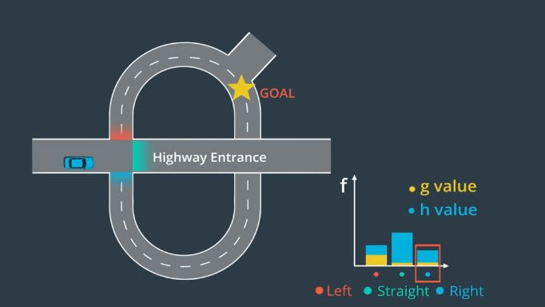
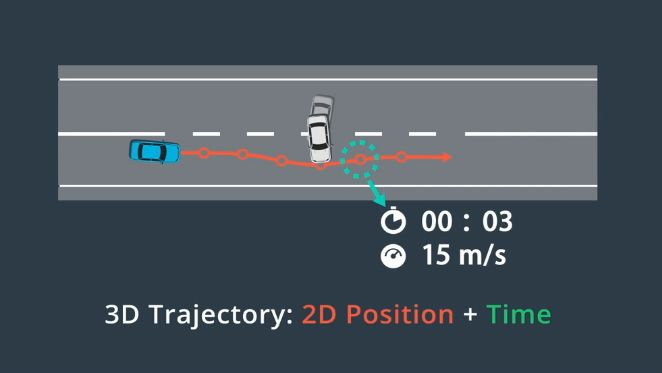
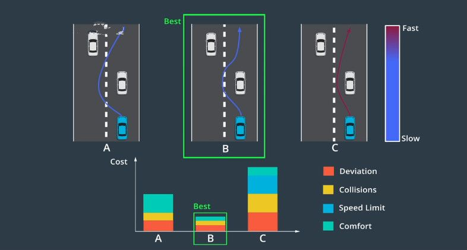
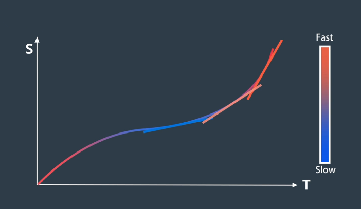
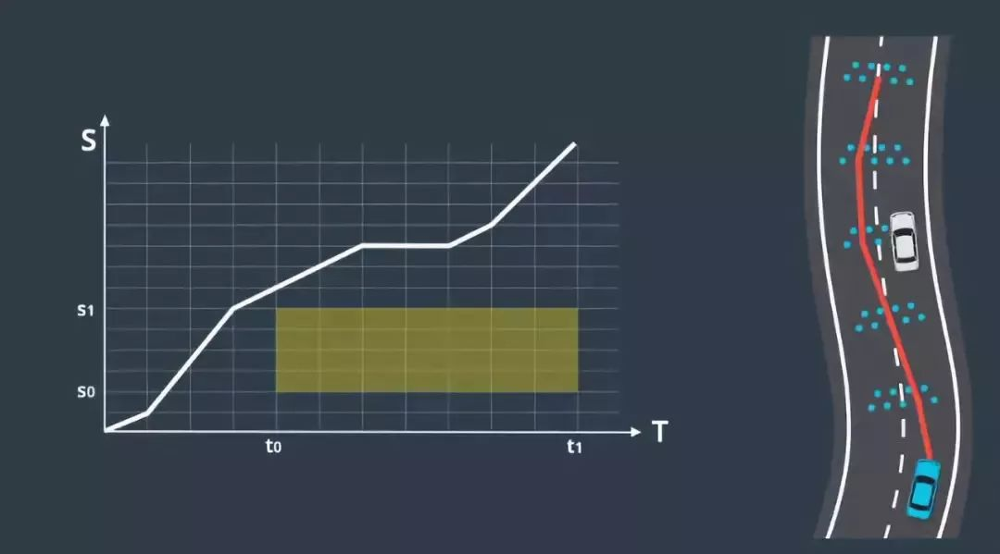
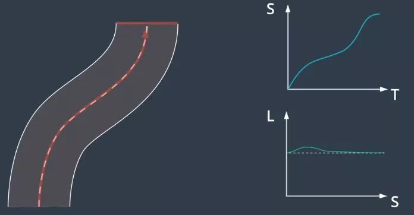
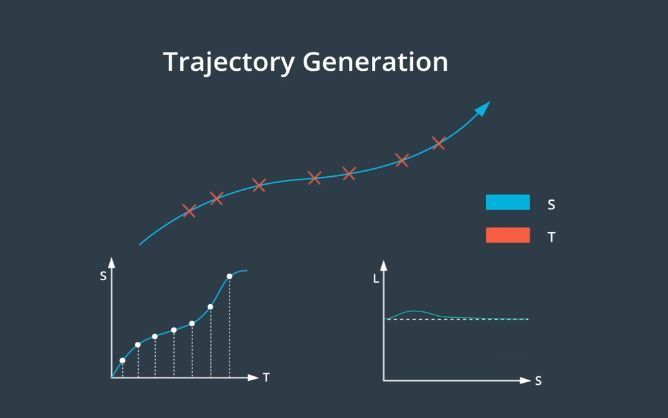

快速回忆
规划包括哪几个部分？每部分通过哪些方式解决问题？
-解释Frenet坐标系？
参考答案：
端到端路径-速度解耦规划包括路线规划和轨迹规划。
假设我们正在路上行驶，感知系统观察到一辆缓慢行驶的车辆离我们越来越近。
首先，在这辆车的周围生成多条候选路线，使用成本函数对这些候选路径进行评估并选择成本最低的路径；
然后，使用 ST 图来进行速度规划，根据其他车辆随时间变化的位置阻挡了 ST 图的部分区域。优化引擎可帮助确定该图的最佳速度曲线，该曲线受制于约束和成本函数。我们可以使用二次规划让路径和速度曲线变平滑；
最后，将路径和速度曲线合并构建轨迹。这里的轨迹在速度较快时为红色，在速度较慢时为蓝色。我们使用该轨迹来安全地绕开其他车辆并继续我们的旅程。
规划
规划指通过一定的规则，找到车辆前往目的地的地图路线。Apollo的解决方案称为：端到端路径-速度解耦规划，其分成两个部分：路线规划与轨迹规划。路线规划根据地图生成可行使路径；而找到避免碰撞和保持舒适度的可执行轨迹。
路线规划
规划的第一步是路线导航，侧重于研究如何从地图上的A点前往B点。在路线导航时，将地图数据作为输入，并输出可行驶路径。
路线规划使用三个输入：地图、当前位置和目的地。
将地图转为图形
寻找最佳路线时，地图被抽象为图。起始地和目标地被设为节点 (node)，可行驶路线看成边 (edge)。
路径查找：A*
A*算法用变量g和h表示每个成本。g值为开始节点前往候选节点的成本，h值为候选节点前往目的地的估计成本或启发式成本。
对每个候选节点，我们通过添加g值和h值来计算总和f值。最佳候选节点是总成本f最小的节点。

每当抵达新节点时，重复此过程来选择下一个候选节点，并总是选择尚未访问过且具有最小f值的节点。
轨迹规划
轨迹生成的目标是生成一系列路径点所定义的轨迹，每个路径点分配了一个速度、角度和时间戳等。
轨迹选择
由于移动的障碍物可能会暂时阻挡部分路段，轨迹中的每个路径点都有时间戳。将时间戳与预测模块的输出相结合，以确保计划通过时，轨迹上的每个路径点均未被占用。每个路径点还被指定了一个速度，用于确保车辆按时到达每个路径点。
这些时间戳和空间上的两个维度（2D position）共同创建了一个三维轨迹（3D Trajectory）。

除了避免碰撞这一约束，现实世界中的规划还面临多种约束。比如：① 要让乘客感到舒适，所以路径点之间的过渡以及速度的任何变化都必须平滑；② 路径点对车辆应实际可行，例如高速行驶的汽车不能立即做180度转弯；③ 轨迹应符合交通法律法规。
符合不发生碰撞、行驶舒适、可行且合法的轨迹可能有多条，因此需要构建“成本函数”，将所有这些缺陷聚合为单个数字，最后选用成本最低的轨迹。
轨迹“成本”由各种犯规处罚组成，例如：偏离道路中心，有可能产生碰撞，速度限制，轨迹的曲率和加速度让乘客感到不舒服等。不同的环境中可能使用不同的成本函数

路径的速度曲线
一个被称为“ST 图”的工具可以帮助设计和选择速度曲线。在ST图中，s表示车辆的纵向位移、t表示时间。ST 图上的曲线是对车辆运动的描述，因为它说明了车辆在不同时间的位置。由于速度是位置变化的速率，所以可以通过查看曲线的斜率从 ST 图上推断速度。斜坡越陡则表示在更短的时间段内有更大的移动，对应更快的速度。

将 ST 图离散为多个单元格，在 ST 图中可以将障碍物绘制为在特定时间段内阻挡道路的某些部分的矩形，为避免碰撞，速度曲线不得与此矩形相交。
尽管离散化使问题更容易解决，但该解决方案生成的轨迹并不平滑。

为了将离散解决方案转换为平滑轨迹，可使用“二次规划”技术（Quadratic Programming)。二次规划将平滑的非线性曲线与这些分段式线性段拟合。
轨迹生成
一种轨迹生成方法是：Lattice 规划，通过使用 Frenet 坐标可以将环境投射到纵轴和横轴上，目标是生成三维轨迹。Lattice 规划将三维问题分解成两个单独的二维问题，其中一个二维轨迹是具有时间戳的纵向轨迹称之为 ST 轨迹，另一个二维轨迹是相对于纵向轨迹的横向偏移称之为 SL 轨迹。

Lattice 规划具有两个步骤，即先分别建立 ST 和 SL 轨迹，然后将它们合并为生成纵向和横向二维轨迹。
ST 轨迹
根据情况可以将状态分成 3 组：巡航 、跟随、停止：
- 巡航意味着车辆将在完成规划步骤后定速行驶。实际上在对图上的点进行采样，图中在时间 t 以 s 点的速度巡航，对于这种模式，所有最终状态的加速度均为零；
- 跟随车辆情况下，要对位置和时间状态进行采样，并尝试在时间t出现在某辆车后面。在跟随车辆时，需要与前方的车保持安全距离，这时速度和加速度将取决于要跟随的车辆，即在这种模式下，速度和加速度都会进行修正；
- 停止模式下只需对汽车何时何地停止进行抽样，这里速度和加速度会被修正为 0 。
SL轨迹
SL规划中，无论车辆进入怎样的终止状态，车辆都应该稳定地与车道中心线对齐。
为了达到这种终止状态，车的朝向和位置的一阶和二阶导数都应该为零。这意味着车辆既不是横向移动的，那是一阶导数；也不是横向加速，那是二阶导数。这意味着车辆正沿着车道直行。
坐标转换
一旦同时拥有了 ST 和 SL 轨迹，就需要将它们重新转换为笛卡尔坐标系，将它们相结合构建由二维路径点和一维时间戳组成的三维轨迹。
ST 轨迹是随时间变化的纵向位移，SL 轨迹是纵向轨迹上每个点的横向偏移。由于两个轨迹都有纵坐标 S，所以可以通过将其 S 值进行匹配来合并轨迹。
